Jelling 1 - Gorm - Letztes Update 13.03.2025
Listennummer : DR 41 / DK SJy 10
Navidaten: 55.75673 9.41972 oder: Thyrasvej 1, 7300 Jelling :
Transliteration: Seite A : kurmR : kunukR : | : k(a)(r)þi : kubl : þusi : | : a(f)(t) : þurui : kunu
Seite B : sina : tanmarkaR : but :
Der kleine Jelling Runenstein lag beim Waffenhaus der Kirche "als Ruhestein für die Müden", wo ihn Ole Worm (*13.05.1588 - 31.08.1654, Arzt, Universalgelehrter und der Begründer der Runologie) bei seinem Besuch im Jahre 1621 in der Lage vorfand. Irgendwann zwischen 1627 und 1639 wurde er an seinem jetzigen Platz, im Kirchhof vor der Eingangstür zum Waffenhaus/Kirche und damit in der Mitte der beiden großen Grabhügel, neben Haralds Runenstein, der nach allen bisherigen Untersuchungen wohl schon immer fast genau dort stand, wieder aufgerichtet. Der ursprüngliche Standort des kleinen Runensteins ist unbekannt, wird im Zusammenhang mit der Schiffssetzung vermutet, wobei es dazu keine verlässlichen Informationen gibt.
Die Bezeichnung "Danebod ist heftig umstritten. Karl Martin Nielsen (*1907 - 1987, dänischer Runologe) interpretierte es als Dänemarks Zierde, und diese Interpretation hatte sich seitdem eigentlich durchgesetzt (Artikel Danmarkar bot in Aarbog for nordisk Oldkyndighed og Historie 1943, 15967. Nochmals in "Festskriftet til 70-årsdagen hans, Jelling-studier og andre afhandlinger". Udgivne på halvfjerdsårsdagen den 8. august 1977 af Selskabet for Nordisk Filologi, København 1977, 8292). Aber Hans Brix (*24.10.1870 - 20.01.1961, Literaturhistoriker) hatte schon 1927 mit dem stilistischen Prinzip der Umrahmung, eine neue Auffassung begründet (Acta philologica Scandinavica 1927, The Inscription on the older Jellinge stone, S. 110-114). Danach wären die einrahmenden Wörter (kurmR kunukR und tanmarkaR but) syntaktisch zu verbinden und in König Gorm der Mehrer Dänemarks zu sehen. König Gorm hatte nach der isländischen Überlieferung um 935/36 Gnupa besiegt, und nach dieser Tat könnte er den Stein sich selbst zum Lob und zum Andenken an seine Frau Thyre errichtet haben. Nachdem Lis Jacobsen (*29.01.1882 - 18.06.1961, dänische Runologin und Archäologin) diese Theorie einer breiten Öffentlichkeit in "Politiken, 01.06.1927" zugänglich machte, entbrannte über dessen Vorschlag unter den Runologen / Sprachforschern ein heftiger Streit, der sich jahrelang hinzog. Dazu wurden sogar Worte wie "Wahnsinn" oder "Kompromittierung der Geschichtswissenschaft" verwendet.
Insbesondere durch die neuere 38-seitige Arbeit des Norwegers Leiv Olsen aus Stavanger, ist die Deutung nun vorangekommen. Er erklärt in dem Artikel: "Leiv Olsen - Maal og Minne - 2013 - S. 1- 38 - Språkleg tolking av Danmarkar bót" dass "bót" normalerweise Verbesserung, möglicherweise Stärkung, in einigen Fällen Nutzen bedeutet, aber nicht "Schmuck" / "Zierde" wie häufig angenommen. Er kommt zu dem Schluss, dass (übersetzt) "...Gorm verwendete den Ausdruck auf dem Runenstein wahrscheinlich, um sich auf etwas zu beziehen, das entweder er oder seine Frau Thyra getan hatten. Sprachlich kann sich der Ausdruck auf beide beziehen. Da die Verbesserung, Stärkung oder der Nutzen des Königreichs in der Verantwortung des Königs lag, ist es höchstwahrscheinlich, dass Gorm sich selbst mit diesem Begriff charakterisierte." Er führt in seinem Artikel im letzten Satz auch an (übersetzt): "...höchstwahrscheinlich bezieht sich der Ausdruck auf Gorm, wie Brix behauptete." Im Eingang des Aufsatzes hat er über die Interpretation von Karl Martin Nielsen berichtet und dann angemerkt (übersetzt): "Hat er sich geirrt? Ich glaube schon." Dann hätte Brix also doch den richtigen Riecher gehabt!
Ich habe nun meinerseits im linken Frame die Inschrift auf diesen aktuellen Stand der Forschung angepasst.
Warum dann aber auf der in 2023 neu angelegten Webseite der dänischen Runendatenbank diese Info steht (übersetzt): "Die Übersetzung und Interpretation von Danmarks bod ist umstritten, wird aber mittlerweile mit Thyra (Danmarks bod oder Dänemarks Ornament) in Verbindung gebracht. *Die Rahmentheorie, die es mit Gorm in Verbindung brachte, wurde aufgegeben. Es wurde diskutiert, ob tanmarkaR Dänemarks Zierde oder Dänemarks Strafe bedeutet, aber neuere Untersuchungen (Olsen 2012) deuten darauf hin, dass bod im Sinne von Dänemarks Verbesserung, Stärke oder Nutzen am wahrscheinlichsten ist." erklärt sich mir absolut nicht!
Auf Gorms Stein findet sich der erste Beleg auf dänischen Boden für den Namen des Landes und er wird von daher als Dänemarks Taufurkunde (-schein) bezeichnet. Der Stein lässt sich historisch etwa auf das Jahr 940-955 datieren. Die Inschrift ist auf den zwei Breitseiten des Steines angebracht und liest sich wie hier dargestellt.
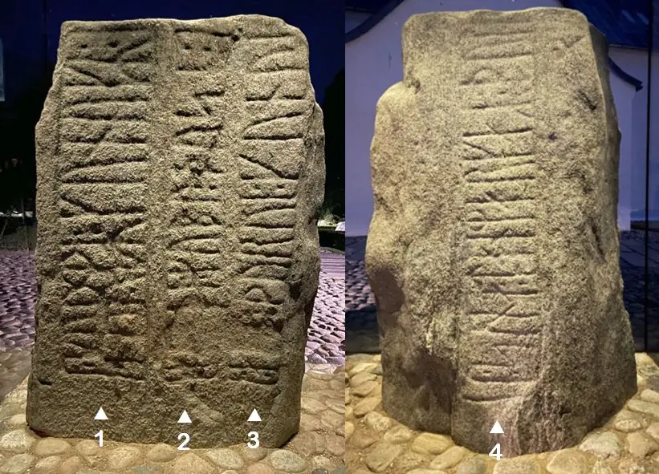
Gorm der Alte hat einen besonderen Platz in der dänischen Geschichte bekommen, weil mit ihm die Reihenfolge der eigentlichen dänischen Königen beginnt, die sich bis zur heutigen Königin Margrethe II. ohne Unterbrechung fortführen lässt.
Erste Schilderungen zu König Gorm der Alte, seiner Königin Thyra, dem Danewerk und ihrem Sohn Harald Blauzahn finden sich bereits bei Sven Aggesen (*um 1140 bis 1150; nach 1186) in dessen Brevis historia regum Dacie, einem vielleicht um 1187 fertiggestellten Abriss der dänischen Reichsgeschichte. Er gab Königin Thyra den Spitznamen "Decus Datie" was mit Dänemarks Zierde übersetzt wird.
Als nächsten Berichterstatter zu Jelling mit seinen Monumenten und der dazugehörigen Königsdynastie haben wir um 1200 Saxo Grammaticus (*1160 - 1220) mit seiner Gesta Danorum. Er verfasste wohl ab 1185 bis 1208 auf Veranlassung Bischof Absalons eine 16-bändige Geschichte Dänemarks in lateinischer Sprache.
Das weltberühmte Rantzau Prospekt der Jelling Monumente von 1591, das sich erstmals in dem Buch "Hypotyposis Arcium, Palatiorum, Librorum, Pyramidum, Obeliscorum, Cipporum, Molarum, Fontium, Monumentorum & Epitaphiorum, ab ... Henrico Ranzovio, Prorege & Equite Holsato, conditorum ..." von Peter Lindeberg (*16.03.1562 - 16.07.1596, Jurist, Reisender, Kaufmann) zwischen den Seiten 122 und 123 befindet, gilt gemeinhin als die älteste Darstellung der Jelling Monumente.

Dieses Bild zeigt eine Fotografie des Originals, die ich am 26.09.2022 in der Königlichen Bibliothek - Den sorte Diamant - in Kopenhagen gefertigt habe Dort ist dieses Werk, das ja auch online eingesehen werden kann, über diesen Link für den Forschungslesesaal bestellbar.
Darauf ist der kleine Stein nicht wiedergegeben und von der Runeninschrift wird nur der Teil der A-Seite - aber korrekt - angeführt.
Diese Darstellung beruht auf einer Tafel zu den Jelling Monumenten die Caspar Markdanner (*1533 - 22.09.1618 aus Søgard, Königlicher Beamter, Lehnsherr auf Koldinghus) 1586 im Chor der Kirche aufstellen ließ. In dem Zusammenhang hatte er den großen Jellingstein aufrichten lassen, da der umgefallen und teilweise mit Erde bedeckt war. Die Tafel ist wohl am 01.07.1679 bei einem Brand der Kirche zerstört worden (siehe unten Beitrag O. Nielsen). Berichtet wird zu diesen Ereignissen von Ole Worm (*13.05.1588 - 31.08.1654, Arzt, Universalgelehrter und der Begründer der Runologie) in seinem berühmten Werk Danicorum Monumentorum Libri Sex aus dem Jahr 1643 auf der S. 329 - siehe auch unten / Inschrift der Tafel nach Ole Worm (*13.05.1588 - 31.08.1654, Arzt, Universalgelehrter und der Begründer der Runologie) unter Jelling 2.
Im Jahr 1597 hat Bonaventura Vulcanius (*30.06.1538 - 09.10.1614, flämischer Gelehrter, Übersetzer und Humanist) in seinem Werk "De literis et lingua Getarum sive Gothorum" auf der S. 46 die Inschrift des Runensteins Jelling 1 - nach Rantzau - wiedergegeben.
Ole Worm (*13.05.1588 - 31.08.1654, Arzt, Universalgelehrter und der Begründer der Runologie) hatte den dänischen König Christian IV. (*12.04.1577 - 28.02.1648) dazu bewogen am 11. August 1622 einen Brief an die Bischöfe von Dänemark und Norwegen zu senden, um darüber die Pfarrer im Land auzufordern alle Informationen zu Denkmälern, Runensteinen, Grabhügel usw. an ihn zu melden, um die älteste Geschichte Dänemarks zu beleuchten. Unterstützer oder gar treibende Kraft war wohl Christian Friis (*4. November 1581 auf Gut Krastrup in Farstrup - 01. Oktober 1639, dänischer Adliger und königlicher Kanzler). Der Originaltext dieses Briefes lautet auszugsweise: "Wor gunst tillforn. Wy bede Eder och wille, at I Eders mueligste flid ahnwender allewegne wdj Eders stigt att opsøge och antegne alle slags antiquiteter och documenter effter medfølgende fortegnelsis indhold, och att I saadanne med flid lader optegne och engang inden Paaske førstkommendis wdj wortt cantzelie lader indleffuere. Dermed skie wor willghe. Befalendis Eder Gud. Skreffuitt paa wortt [slott] Kiøbenhaffn, den 10. augusti anno 1622. Vnder vort signett.Christian."
Ein unsignierter Bericht zu Jelling ging daraufhin bei Worm ein - vermutlich von 1638 vom damaligen Pfarrer in Jelling Jørgen Pedersen Lemvig (*1603 - 13.01.1679):
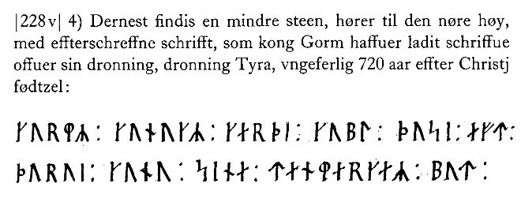
Quelle: Præsteindberetninger til Ole Worm, Bind 1, Indberetninger fra Ålborg og Ribe Stifter 1625-42, Frank Jørgensen, S. 191 (Online verfügbar hier).
Diese Skizze von Jon Skonvig (*1600 - 1664, Pfarrer und der Runenzeichner für Ole Worm), die den kleinen Runenstein liegend wiedergibt, stammt von seinem dortigen Besuch 1629.
Begleittext: "Denne steen findiss ocsa paa Jelling Kirke gaard oc Er En haard Kamp 3 all lang 1 ½ all bred".
Die Zeichnung misst im Original 10,4 cm in der Breite. Skonvigs Steinmaße ergeben in neuzeitlichen Maßangaben (1 Elle = 62,77 cm) allerdings 188 x 94 cm. Da man die Steinmaße heute mit 139 cm x 107 cm angibt, tauchten Fragen auf. Zu Skonvigs Zeiten lag der ja aber um und war nicht in die Erde eingelassen. Bei einer Untersuchung im Jahr 2006 konnte dann als Höhe 185 cm gemessen werden. Aber Ludv. F. A. Wimmer (*07.02.1839 - 29.04.1920, Philologe und Runenforscher) hatte doch schon in seiner Abhandlung zu Jelling 1 geschrieben:, dass er die Seite A hat vollständig ausgraben lassen um sich Klarheit über dessen Form und Ausmaße zu verschaffen, was dann auf der Zeichnung von Magnus Petersen (*04.09.1827 - 01.02.1917, Archäologischer Zeichner und Restaurator) eindeutig zu sehen ist. Anhand der Maßangabe unter der Zeichnung habe ich das dann auf ca. 187 cm umrechnen können - passt schon!

Die Aufzeichnungen von Jon Skonvig - sechs Handschriften - haben sich in der sogenannten "Arnamagnæanske samling, AM 366-371 fol." (zu deutsch: Arnamagnäanische Sammlung) erhalten.
Über diesen Link kann die entsprechende originale Seite 18r der A.M. 367 fol - siehe oben - die diese Runensteinzeichnung und den Text von Skonvig wiedergibt über die Webseite "www.handrit.is" eingesehen werden.

Am Mittwoch, 28.09.2022, war ich in Kopenhagen in der Universität in der Arnamagnæanske Samling und durfte das Original - AM 367 fol. - in Händen halten und eingehend fotografieren. Man bat mich aber von einer Veröffentlichung meiner Fotos abzusehen und stattdessen auf die digitalisierte Handschrift über www.handrit.is zu verweisen.
Unter GKS 2370 kvart finden sich in der Königlichen Bibliothek in Kopenhagen von Ole Worm (*13.05.1588 - 31.08.1654, Arzt, Universalgelehrter und der Begründer der Runologie) erhaltene Teile seines Originalentwurfs seiner Monumenta Danica aus dem Jahr 1623. Daraus entstand sein bahnbrechendes Werk "Danicorum Monumentorum Libri Sex, Hafniae, 1643". Die Passage zu Jelling habe ich hier aufbereitet:


Dieses Werk habe ich bei meinem Kopenhagen Studien Tripp 2022 am 26.09.2022 in der Königlichen Bibliothek - Den sorte Diamant - in Kopenhagen auszugsweise fotografiert.
Durch Emil Leopold Gigas (*23.08.1849 - 08.09.1931, Bibliothekar, Literaturhistoriker) wurde das Werk "E. Gigas: Katalog over Det store kongelige Bibliotheks Haandskrifter. Første Bind (1903)" herausgegeben. Darin findet sich auf der S. 14 dieser Eintrag dazu:

Gigas verweist darin auch auf Jon Erichsen (*31.08.1728 - 29.03.1787, isländischer Bibliothekar und Verfasser) der diese Handschrift in seiner früheren Auflistung "Udsigt over den gamle Manuscript-Samling i det store Kongelige Bibliothek" von 1786 auf der S. 93 unter der Nummer 2 aufgelistet hatte. Er war seit 1781 als Bibliothekar bei der Königlichen Bibliothek in Kopenhagen angestellt und hat die damals noch völlig ungeordnete Sammlung erstmals grundlegend katalogisiert - Titelblatt. Eine deutschsprachige Rezension zu diesem Werk findet sich in der Allgemeine Literatur- Zeitung - März 1788. Außerdem führt Gigas den Namen Hans Gram (*28.10.1685 - 19.02.1748, Philologe und Historiker) an. Er war von 1730-48 Leiter der königlichen Bibliothek. Er gilt als der erste moderne Historiker Dänemarks. Diese Handschrift befand sich vormals mit der Nummer 118 in seiner Sammlung (Umfasste ca. 24.000 Bücher und ca. 300 Handschriften) und wurde 1750 in den Bestand der Königlichen Bibliothek Kopenhagen aufgenommen. Seine Bücher wurden nach seinem Tod nämlich auf zwei Auktionen versteigert und gingen größtenteils ins Ausland. Die Handschriften hingegen erwarb die Königliche Bibliothek in Kopenhagen damals komplett. Ein Bildnis von Hans Gram findet sich z.B. hier.
Im Jahr 1634 hat
Johann Adolph Cypraeus (*1592 -
Oktober 1636, katholischer Pastor) das Werk "Annales
Episcoporum Slesvicensium" veröffentlicht. Unter Berufung auf das
Werk von
Henrik
Rantzau (
Noch vor seinem u.a. Standardwerk hat Ole Worm (*13.05.1588 - 31.08.1654, Arzt, Universalgelehrter und der Begründer der Runologie) im Jahr 1636 in dem Buch "Runer seu Danica literatura antiquissima, vulgò Gothica dicta luci reddita" auf der S. 55 kurz zu "... Regis Gormonis & Haraldi monumentum quod Jellinga..." berichtet.
Ole Worm (*13.05.1588 - 31.08.1654, Arzt, Universalgelehrter und der Begründer der Runologie) nutzte die zeichnerische Vorlage von Skonvig - siehe oben - für einen Metallschnitt auf der S. 339 in seinem berühmten Werk "Danicorum Monumentorum Libri Sex, Hafniae, 1643" - Lizenz: Public Domain
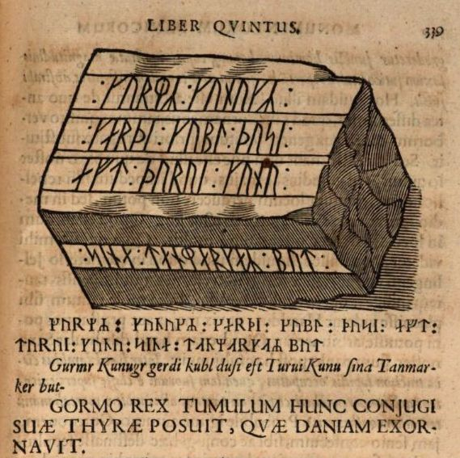
Dieser Screenshot findet sich in einer digitalisierten Ausgabe im Internet über die Bayerische Staatsbibliothek / MDZ Münchener DigitalisierungsZentrum Digitale Bibliothek - urn:nbn:de:bvb:12-bsb10800415-0 - abgerufen 20.06.2023. Das Titelblatt habe ich hier einmal zur Ansicht.

Die u.a. Gesamtdarstellung auf der S. 328 habe ich am Montag, 26.09.2022, in der Königlichen Bibliothek - Den sorte Diamant - in Kopenhagen selbst fotografiert.

Lis Jacobsen (*29.01.1882 - 18.06.1961, dänische Runologin und Archäologin) hat sich dankenswerterweise zur Aufgabe gemacht dessen lateinische erste und vollständige Beschreibung über Jelling durch cand. mag. G. Hermansen ins Dänische übersetzen zu lassen. Sie hat dies in dem Artikel "Ole Worms beskrivelse og tolkning af Jelling-monumentet" in dem Vejle Amts Aarbog, Ausgabe 1937, auf den S. 1-28 mit Anmerkungen veröffentlicht. Darüber ist es für mich doch einfacher / schneller zu verstehen, zumal man den dortigen Text auch kopieren und z.B. mit Google Übersetzer ins Deutsche übertragen kann.
Stephan Hansen Stephanius (* 23.07.1599 - 22.04.1650, dänischer Philologe und Historiker) hat in seinem 1645 erschienenen Werk "Notae uberiores in Historiam Danicam Saxonis Grammatici" auf den S. 202-204 unter Rückgriff auf das Material / die Druckplatten von Ole Worm (wie später auch Peder Hansen Resen s.u.) zu Jelling und seinen Monumenten berichtet.

Screeshot - 23.06.2023 - Bayerische Staatsbibliothek / MDZ Münchener DigitalisierungsZentrum Digitale Bibliothek - urn:nbn:de:bvb:12-bsb11197250-3
Die nächste Erwähnung des Runensteins findet sich bei Johannes Meier (1660, Lehrer und Verfasser) in seinem Werk Liber monumentorum Danicorum, qvi monumenta Danica Olai Wormii partim emendat partim locupletat von 1654 (Seite 37 links) - Königlichen Bibliothek in Kopenhagen - GKS 2371 kvart


In der Königlichen Bibliothek in Kopenhagen hat sich von Johannes Meier aber auch noch eine zweite Handschrift erhalten - NKS 799 kvart - Joh. Mejeri Monumenta Runica in Dania. Deren Entstehungsdatum ist nicht bekannt. Der Runenstein findet sich auf Seite 36 links.


NKS 799 kvart -
Joh. Mejeri Monumenta Runica in Dania - Papier -
44 Blatt, Blatt 41-44 unbeschrieben, aus dem 18. Jahrhundert, vormals Nr. 70
in
der Manuskript Sammlung von
Peder Frederik Suhm (*18.10.1728 - 07.09.1798). Es handelt sich um
ein Büchlein mit einfachem Pappeinband, der Buchrücken ist aus Leder und
verstärkte Ecken aus Leder weist der Buchdeckel auf. Es hat die Maße: H: ca. 20
cm / B: ca. 17 cm / D: ca. 1,5 cm. Zu den einzelnen Zeichnungen im Büchlein
wurde ein einfacher Maßstab abgebildet.
Bei beiden Exemplaren
weist immer das rechte Blatt der Doppelseite in der oberen Ecke eine mit
Bleistift geschriebene Seitenzahl auf. Diese beiden Werke sind Abschriften von
früheren Werken, die die Zeit nicht überdauert haben.
Vielleicht sind sie in
Kopenhagen beim Großbrand von 1728
vernichtet worden, als neben zahlreichen privaten Beständen auch ca.
35.000 Bücher der Kopenhagener Bibliothek ein Raub der Flammen wurden!
Die
GKS 2371 kvart soll laut
Ludv. F. A. Wimmer
(*07.02.1839 - 29.04.1920, Philologe und Runenforscher) und seinen Infos
Christian Bruun (*10.12.1831 -
28.02.1906, Königlicher Bibliothekar) von
Niels Foss selbst abgeschrieben worden sein. Er hat die Texte laut
den Studien von
Erik Moltke
(*04.04.1901 - 19.10.1984, Runologe, Historiker)
offenbar überarbeitet, verkürzt oder geändert und seine eigene
Orthografie eingebracht (z.B. alt: haffuer - bei Foss: haver / tyck/tyk /
kircke/kirke / oc/og u.a.).
In der
NKS 799 kvart hingegen steht auf der Seite 37 links unten "Niels
Knudsen Jerne" und seine Handschrift lässt vermuten, dass er die
gesamte Abschrift angefertigt hat. Er war offenbar ein professioneller Schreiber
und könnte mit dem Niels Knudsen identisch sein, der
1728 "Skriverkarl" auf dem Holmen (Stadtviertel von
Kopenhagen) war, also ein Mann der schnell viele Texte schreiben und liefern
konnte. Er wurde am 08.11.1737 zum "ekvipageskriver"
ernannt. Es scheint dass er sich entgegen
Niels Foss sehr eng an das Original gehalten hat.
Offenbar gab es laut dem Katalog über die
Büchersammlung
von
Peter
Hansen Resens (*17.06.1625 -
01.06.1688) "Bibliotheca
Regiæ Academiæ Hafniensi donata" Hafniæ (Kopenhagen) von
1685 - siehe
S. 273 - früher noch ein drittes Werk von
Johannes Meier mit dem Titel "Johan. Meieri
liber MS. de Monumentis Runicis sive antiqvis Danicics".
Quellen: Erik
Moltke -
Jon Skonvig og de andre runetegnere. Et bidrag til runologiens historie i
Danmark og Norge I-II,
1956-58
Band 2, Kapitel 13, S. 13 ff. / eigene Recherchen
Die beiden Handschriften konnte ich bei meinem Besuch in der Königlichen Bibliothek in Kopenhagen am Montag, 26.09.2022, in Händen halten und fotografieren.
Peder Hansen Resen (*17.06.1625 - 01.06.1688, Jurist und Historiker) - Er hat mit dem von ihm über 20 Jahre gesammelten Material das großartige Werk "Atlas Danicus", bestehend aus letztlich 39 Folianten, geschaffen. Nur geringe Teile wurden aber schon zu seiner Lebzeit gedruckt. Die Folianten wurden wenige Jahre nach seinem Tod 1692 an die Königliche Bibliothek Kopenhagen übergeben. Aufbewahrt wurden sie auf dem Dachboden der Trinitatis Kirche. Dort wurden sie fleißig studiert, abgeschrieben und zeitweise ausgeliehen. Leider wurde dann ein Großteil davon beim Kopenhagener Großbrand 1728 zerstört. Es hat sich neben einigen Originalseiten - siehe Arnamagnäanische Sammlung - AM 359 fol. / AM 360 fol. / AM 361 fol. und AM 362 fol. (digitalisiert) - nur eine (verkürzte) Abschrift und außerdem Kupferstiche von etwa 200 Städteansichten aus der Vogelperspektive erhalten. Originale dieser AM 359/360/361 fol sind über die Universität Kopenhagen - Institut for Nordiske Studier og Sprogvidenskab (NorS) - AM 359 fol / AM 360 fol / AM 360 fol (Karten) / AM 361 fol - in sw abrufbar. Eine zweite (verkürzte) Ausgabe war von Vincent Lerche (*04.04.1666 - 28.07.1742, Jurist, Architekt) beauftragt worden, diese wurde aber beim Brand von Schloss Christiansborg im Jahr 1794 vernichtet.
In der Königlichen Bibliothek Kopenhagen wird seit 1803 in der Sammlung Uldall (186 folio) diese einzige verbliebene Ausgabe, die in den 1750er Jahren durch den Hofbaumeister Laurids de Thurah (*04.03.1706 - 06.09.1759) aus verstreuten Resten des Atlas Danicus in 7 Bänden rekonstruiert worden war, aufbewahrt:
Wie diesem Titel zu entnehmen ist, gehörte dieses Exemplar vormals Adam Gottlob Graf von Moltke(*10.11.1710 - 25.09.1792, Staatsmann, Diplomat). Nach dessen Tod erwarb Herman Treschow (*11.12.1739 - 02.05.1797, Professor für Theologie, Pfarrer) diese Ausgabe. Peter Uldall (*29.06.1743 - 11.11.1798, Jurist, Theologe) wiederum kaufte sie für 170 Rigsdaler (Rigsdaler zu 24 Skilling - damals 1 ½ Mark) nach dessen Ableben. Er hatte aber nicht lange Freude daran, denn er starb ein Jahr später an einem Schlaganfall. Sein Sohn, Justizrat W. A. Uldall, schenkte diese Ausgabe der Kgl. Bibliothek im Jahr 1803, wo dieses großartige Werk noch heute verwahrt wird (Ein Band hat übrigens die Größe H/B/D von 40 cm x 29,5 cm x 9,5 cm).
Im Atlas VI. ist auf den Seiten 744-48 ein Eintrag zu den Jelling Monumenten / Runensteinen enthalten, die ich am 28.09.2022 vor Ort fotografieren durfte.


Diese Gesamtdarstellung auf der S. 744 und die zeichnerische Wiedergabe der beiden Runensteine orientiert sich unverkennbar an Ole Worms Danicorum Werk "Danicorum Monumentorum Libri Sex, Hafniae, 1643"
Resens Bericht über Jelling beginnt mit dem 3. Absatz der S. 744 und zu der Zeichnung fügt er darunter eine Erklärung an (übersetzt): "A ist die Kirche. C ist der Hügel nördlich der Kirche, der 64 Ellen hoch ist (1 alen/Elle = 62,77 cm), 360 Ellen breit - weiter auf der S. 745 - am Fuß und 112 an der Spitze. D ist die Quelle auf diesem Hügel, die aus Stein gebaut und im Umfang 47 Ellen misst. E ist der Hügel, der südlich der Kirche liegt,; der ist 37 Ellen hoch und misst im Umfang 431 Ellen..." Zum Runenstein 1 heißt es dann weiter auf der S. 747 unten: "...Bei der Tür derselben Kirche liegt ein weiterer Stein, der nur zwei Ellen lang und - weiter auf der S. 748 - anderthalb Ellen breit ist und nicht höher ist, als dass Menschen, die aus Müdigkeit darauf sitzen, mit ihren Füßen den Boden berühren können. Darauf sind auch mehrere Runen geschrieben, wie das folgende Bild zeigt:
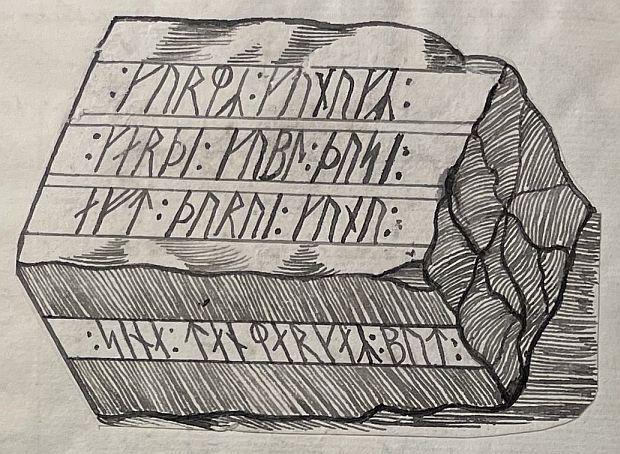
In gebräuchlichen Buchstaben kann dasselbe wie folgt ausgedrückt werden: Gurm Kunukr gardi Kubl dusi aft Turui Kunu sina tanmarkar but, d.h. König Gorm errichtete dieses Denkmal für seine Frau Thyra, die Dänemarks Schmuckstück war. Dieser Gorm war, wie wir wissen Vater von Harald Blauzahn, und errichtete dieses Denkmal für seine Frau, als sie noch lebte, so wie es bis auf den heutigen Tag üblich ist, und nicht nachdem sie gestorben war, denn sie lebte noch lange nach Gorms Tod."
Ein weiterer Bericht zu Jelling stammt von Troels Arnkiel (Getauft 28.04.1638 - 07.09.1712, lutherischer Pastor und Altertumsforscher). In seinem im Jahr 1702 erschienen Werk "M. Trogilli Arnkiels, Probsten und Pastoren zu Apenrade Jn dem Hertzogthumb Schleßwig-Hollstein/ Außführliche Eröffnung Cimbrische Heyden-Begräbnisse : Wie unsere Vorfahren Cimbrischer Nation/ Die Sachsen/ Guten/ Wenden und Fresen/ und die von denselben herstammende Mitternächtige Völcker I. Jhre Begräbniß-Gebräuche/ II. Jhre Todten-Gräber/ III. Jhre Grab-Krüge/ IV. Ihre Grab-Schrifften An- und eingerichtet/ ... / Erklähret und mit vielen Kupfferstücken beleuchtiget von M. Trogillo Arnkiel/ Probsten und Pastoren zu Apenrade" macht er im Theil 3, S. 275, unter § 5 Anmerkungen zu Jelling, verschweigt aber den kleinen Runenstein.

Eine Seite zuvor bringt er (mit dem Hinweis zu "Pag: 275") diese zeichnerische Darstellung der Jelling Monumente die natürlich als Vorlage den Rantzau Prospekt der Jelling Monumente von 1591 hat. Allerdings wurde dieser Prospekt zuvor überarbeitet und zeigt nun beide Runensteine unter "B", und auf dem rechten Hügel unter "F" den "Grab-Stein des Königs..." der von dort zur Kirche verbracht wurde.

Quelle: Universitäts- und Landesbibliothek Sachsen-Anhalt - https://nbn-resolving.org/urn:nbn:de:gbv:3:1-750088 - Lizenz: Public Domain 1.0 - Screenshots vom 24.06.2023
Erik Pontoppidan (der Jüngere, *03.09.1698 - 20.12.1764, dänischer Theologe, Prediger, Historiker und Autor) schreibt in seinem Werk von 1763 "Den Danske Atlas" - Band I - Cap. 1, S. 3 (S. 3 - Fußnote zu * in der pdf-Datei) "...Paa Kong Gorms navnkundige Grav-Steen Jelling, staaer med Rune Bogstaver, Tanmaurk og andensteds Tanmarku". In diesem Band, nun in Kapitel VI, kommt er auf der S. 95 (S. 14 in der pdf-Datei) ganz kurz auf die Hochzeit von Gorm und Thyra zu sprechen und auf der nachfolgenden S. 96 (S.15 in der pdf-Datei) berichtet er noch zu dem großen Runenstein von Harald Blauzahn (mit Tafel IX - Bildliche Wiedergabe des großen Runensteins mit Inschrift - siehe Jelling 2 - beruht auf einem Holzschnitt von Jon Skonvig).
In seinem Band V, 2. Bind, Cap. 10, macht er auf der 987-89 (S. 30 (c) in der pdf-Datei) und auf der S. 998 Ausführungen zu Jelling. Dort schreibt er u.a.: "Der zweite Stein mit Runenschrift, der von der Beerdigung von König GORMS und Königin TYRE DANEBODS in diesen Hügeln zeugen, steht aufrecht auf dem Kirchhof vor dem Eingang der Kirche, aber ob er ursprünglich dort stand ist unbekannt. Den kleineren, recht schlichten Stein hat König GORM zweifellos zu seinen Lebzeiten geschnitzt und war für seine Königin als Denkmal gedacht..." und weiter: "Zur Zeit von König FRIDERICH II. war der große Stein im Boden versunken, aber der berühmte Lehnsmann von Koldinghuus, Caspar Markdaner, ließ ihn 1586 ausgraben und aufstellen, worauf er eine Tafel mit einer vergoldeten Inschrift anbringen ließ im Chor der Kirche, die bis zum Brand der Kirche im Jahr 1679 sichtbar war."
Durch Søren Abildgaard (*18.02.1718 - 02.07.1791, Zeichner, Kupferstecher und Geologe) wurden mehrere Aufzeichnungen zu Jelling vorgenommen. Eine zweiseitige Notiz von ihm aus dem Jahr 1776 - Originalgröße 14 x 20 cm - bezieht sich auf eine ältere Lesung der Inschrift von B. Grauer, Notar aus Tondern, 1737 (Nr. 599) - siehe unten..


Quelle: Digitale Sammlung des Nationalmuseums in Kopenhagen - Bild 1 - Bild 2 jeweils Lizenz: CC-BY-SA
Er bezieht sich hier auf das 1734 erschienene Werk von B. Grauer, Notar aus Tondern, mit dem Titel "Gründliche und ausführliche Erklärung Derer Heydnischen und in specie Runischen Götzen-Bilder, Thieren, Figuren und Gotho-Runischen Characteren, Welche auf dem im Jahr 1734. den 21 April bey Gallehus gefundenen gülden sogenannten Heiligthums- oder Götzen-Dienstes-Horn sich repräsentiren". Auf dessen S. 93/94 finden sich diese Informationen zum Runenstein von Gorm der Alte - siehe hier:
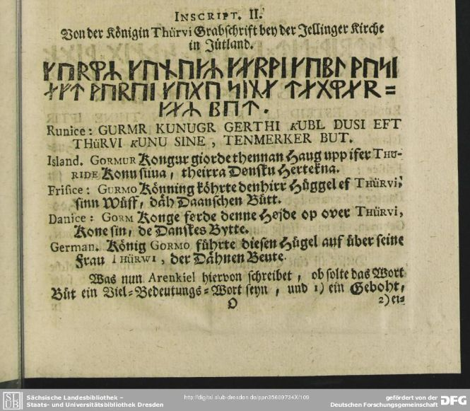
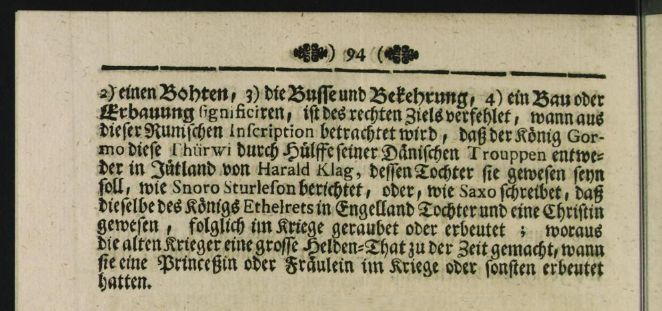
Quelle: SLUB Dresden - urn:nbn:de:bsz:14-db-id35609734X0 - Lizenz: Public Domain Mark 1.0 - abgerufen 21.06.2023 - S. 93 und 94 von mir zugeschnitten
Poul Grinder-Hansen (*30.12.1956, dänischer Historiker, Museumskurator undVerfasser) merkt in seinem Buch "Søren Abildgaard (1718-1791) Fortiden på tegnebrættet" - 2010 - zur Nr. 599 auf der S. 533 an, dass man an dieser Notiz, das eigenhändige Abzeichnen der Runenzeichen durch Søren Abildgaard erkennen könne, wie gründlich er sich auf seine Arbeit mit den Jelling Monumenten vorbereitet habe. Die zu Werken von Abildgaard in Klammer gesetzten Nummern beziehen sich jeweils auf diesen Katalog.
Weiterhin hat er diese undatierte und unsignierte Skizze
von dem Runenstein von

Quelle: Digitale Sammlung des Nationalmuseums in Kopenhagen - Lizenz: CC-BY-SA
Auch dieses eng beschriebene Blatt - Originalgröße 21 x 33 cm - hat Søren Abildgaard geschaffen. Es ist mit zahlreichen Texten zu den Inschriften und den Runenzeichen beschriftet. Aufgrund der ordentlichen Größe hier zunächst nur als Miniaturansicht, die aber durch Mausklick vergrößert angezeigt wird.

Quelle: Digitale Sammlung des Nationalmuseums in Kopenhagen - Lizenz: CC-BY-SA
Die Informationen zu der Inschrift auf dem kleinen Runenstein von Jelling finden sich im unteren Bereich. Unterhalb der 3 Linien mit Runen (Inschrift der Seite A) die seitlich geschrieben stehen findet sich dieser Text: "Disse Runer staar paa en Side af den mindre Runesteen opreist paa Jellings Kirkegaard." - Übersetzung: "Diese Runen stehen auf einer Seite des kleineren Runensteins, der im Jelling Kirchhof errichtet wurde." Die Inschrift der Seite B steht ebenfalls auf der Sesite, unter den 3 Linien der Seite A. Dazu hat er rechts unten (oberhalb seiner Unterschrift) diesen Text vermerkt: "Denne Rad Runer staaer paa den anden Side af samme mindre Runesteen." - Übersetzung: "Diese Runenreihe steht auf der anderen Seite desselben kleineren Runensteins."
Eine, wie ich finde, besonders tolle Wiedergabe des kleinen Runensteins mit seiner Inschrift und kurzen ergänzenden Kommentaren zu einzelnen Runenzeichen hat Søren Abildgaard hier mit diesem Skizzenblatt erschaffen - Originalgröße 26 x 21 cm (Nr. 603) - das wohl als Vorlage für seine Reinzeichnung diente, die dann als nächstes folgt. Am linken Blattrand ist offenbar auch eine Teilskizze zu seinem o.a. Jelling Prospekt (Baum / Hügel) zu erkennen. Auf der Rückseite des Blattes findet sich eine gleichartige Wiedergabe des großen Runensteins (siehe unter Jelling 2).
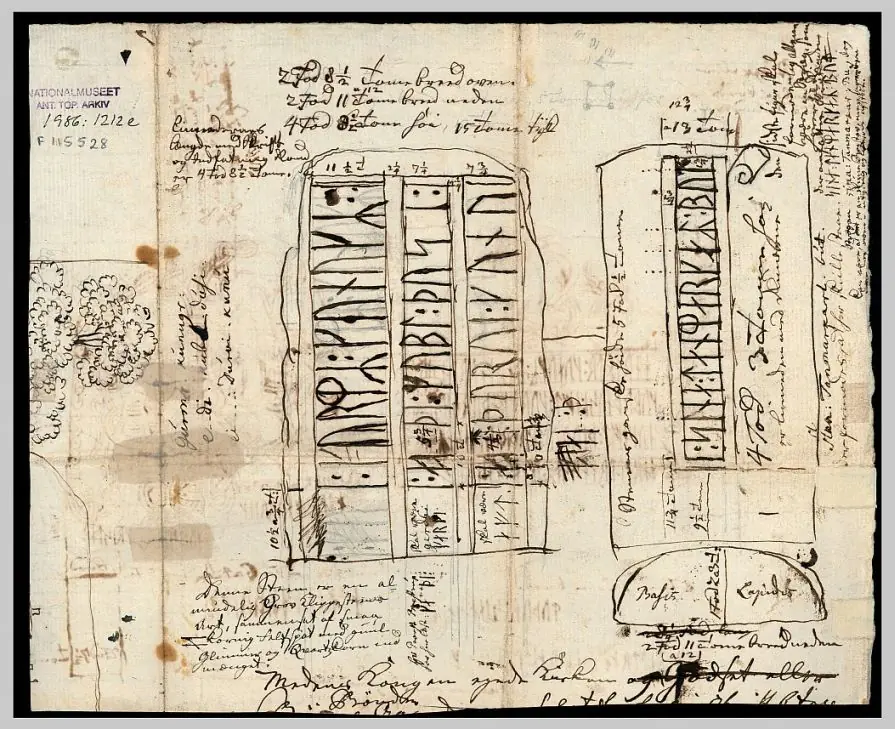
Quelle: Digitale Sammlung des Nationalmuseums in Kopenhagen - Lizenz: CC-BY-SA
Mit dieser Reinzeichnung - Originalgröße 22 x 26 cm (Nr. 604) - zum kleinen Runenstein bin ich an der Stelle mit Søren Abildgaard durch.

Quelle: Digitale Sammlung des Nationalmuseums in Kopenhagen - Lizenz: CC-BY-SA
Aufgrund der ordentlichen Größe auch hier zunächst nur als Miniaturansicht, die aber durch Mausklick vergrößert angezeigt wird. Unter der Zeichnung findet sich der folgende Text: "
Übersetzung: "A und B stellen beide Seiten des kleineren Runensteins dar, der aufrecht im Jelling Kirchhof in Tyrrild Herred steht. Abbildung C stellt den Querschnitt des Steins dar. Auf der Seite A, die flach ist und drei Runenlinien aufweist, sind einige Runen in der zweiten und dritten Zeile abgeplatzt. Auf der Seite B, deren Oberfläche gebogen ist und drei Teile hat, befindet sich eine Runenlinie, die mit einem breiten Rand oder Band versehen ist; es scheint ungewiss, ob das letzte Wort in dieser Linie zwei oder drei Runen hat, sollte der letzte Strich ein Zeichen sein, dann gibt es
Ergänzend bleibt anzumerken, dass Søren Abildgaard auch noch Notizen zu Jelling anlässlich seines Besuches vor Ort in seinem Dagbog IV von 1771 auf den S. 8 bis 15 - hier die S. 13 mit der Inschrift zum Stein 1 - aufgenommen hat. Darin schreibt er (übersetzt) - ab 2. Absatz: "...Im Jelling Kirchhof auf der südlichen Seite der Kirche stehen 2 Runensteine aus Felsbrocken, ein großer und ein kleinerer. Der kleinere, ganz am Ende stehende, ist ein länglicher, hoher Stein, dessen 2 breite Seiten ungefähr eben sind, auf der breitesten Seite befinden sich 3 Runenlinien aus denen von unten nach oben gelesen wird, und die Runen sind folgendermaßen in den Stein eingraviert: - hier folgt dann die Wiedergabe der drei gezeichneten Linien.
In der ersten Zeile und im ersten Wort gibt es zwischen () und () eine kleine Unebenheit, weshalb sie diese beiden Runen auch etwas weiter auseinander platziert haben als die anderen, (damit) die Unebenheit sie nicht daran hindern sollte, () richtig zu ritzen. Im ersten Wort der beiden langen Zeilen hat die zweite Rune im Wort eine unbekannte Form (d.h. wegen) Abspaltung. Die Länge der Lücken wurde gemessen.
Auf der anderen Seite ist der Stein leicht halbzylindrisch, und auf der steht eine einzelne Linie mit einer Runeninschrift, die auch von unten nach oben lautet: - hier folgt dann die Wiedergabe der gezeichneten Linie.
Im Mittelwort ist die letzte Rune diese (), aber es scheint auch, dass dasselbe sowohl L als auch R bezeichnet, da es darüber einen Haken wie diesen hat (), jedoch könnte derselbe Haken vielleicht eine natürliche Hohllinie im Stein sein oder von einem Schaden stammen. Ob das letzte Wort nur aus 2 Runen besteht und die 3. Zeile zum Rahmen gehört, weiß ich nicht; es scheint jedoch wie ein ().
Anmerkung: Für die () stehen im Original Runenzeichen. - Quellenangabe: Søren Abildgaard i Jelling 1771
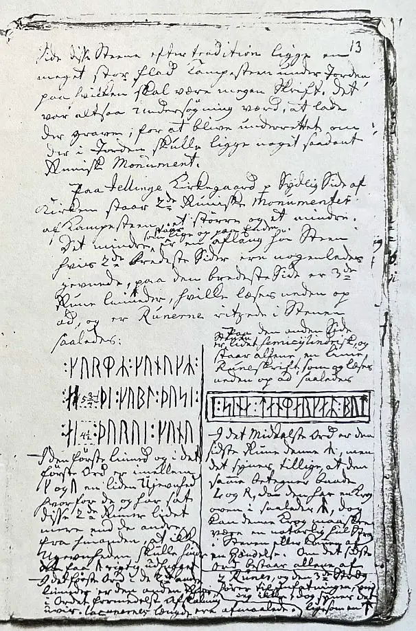
Seine Tagebücher befinden sich heute im Antiqvarisk-Topografisk Arkiv in Kopenhagen. Dies ist die Fotografie einer Kopie, die auch dort vorgehalten wird und die ich im Archiv am 28.09.2022 fertigen durfte.
Durch Johann Georg Meusel (*17.03.1743 - 19.09.1820, deutscher Historiker, Lexiko- und Bibliograf) wurde im Jahr 1777 in dem Werk "Der Geschichtsforscher, Band V", auf der S. 53 dieser Text wiedergegeben: "...
Von Martin Friedrich Arendt (* 22. Februar 1773 in Altona; April 1823 in der Nähe von Venedig/Italien, deutscher Botaniker und Altertumsforscher) haben sich im Antikvarisk -Topografisk Arkiv in Kopenhagen drei Aufzeichnungen zu dem kleinen Runenstein von Jelling, die er auf den 05. und 06.01.1808 datiert hat, erhalten (Auf kleinem, ausgeschnittenem Papier, unterschiedliche Maße, mit Bleistift / Tusche gezeichnet). Bei meinem Besuch in diesem Archiv am 27.09.2022 durfte ich diese Notizen selbst fotografieren.


Jens Jacob Asmussen Worsaae
(*14.03.1821 - 15.08.1885,
dänischer Archäologe und Vorgeschichtler) hat in seinem Tagebuch "Notesbog
XX" aus dem Jahr 1859 diese Aufzeichnungen
zu
Jelling vorgenommen. Darüber steht allerdings
1856. Die Inschrift in
Runenzeichen zum
Jelling Stein von

Dessen Tagebücher werden heute in Kopenhagen in dem "Antikvarisk-Topografisk Arkiv" aufbewahrt, worüber ich bei meinem Besuch am 27.09.2022 Einsicht nehmen und diese Fotos anfertigen durfte.
Auch
Jacob Kornerup
(*19.11.1825 -
09.03.1913, dänischer Archäologe und Zeichner aus Roskilde) hat in
seinem Tagebuch zum Jahr 1859 eine kurze
Aufzeichnung zu
Jelling vorgenommen. Auf
der u.a. wiedergegebenen Seite hat er die Inschrift zum
Runenstein 1 von
Dessen Tagebücher werden heutzutage in Kopenhagen, Nationalmuseum, Antikvarisk-Topografisk Arkiv, aufbewahrt. Dort durfte ich am Dienstag, 27.09.2022, zu Gast sein, sie durchsehen und fotografieren.
Auf Jacob Kornerup kommen ich später nochmal zurück. Von ihm stammt das tolle Druckwerk "Kongehøiene i Jellinge og deres Undersøgelse efter Kong Frederik VII's Befaling i 1861" (mit einem Vorwort von J.J.A. Worsaae) aus dem Jahr 1875, Bianco Lunos Buchdruckerei, Kopenhagen, ca. 30 x 40 cm, mit 23 Tafeln und 5 "kemitypier" (Photochemischer Klischeedruck).
Von Rasmus Henrik Kruse (*07.08.1796 - 30.05.1877, Landschaftsmaler und Antiquar) haben sich im "Antikvarisk-Topografisk Arkiv" in Kopenhagen in seinen Aufzeichnungen mit dem Titel "Nørre Jyllands Mærkværdigheder i det 19. Aarh. Hs. Bd 1-2 (med) Tillæg 1-2" seine Notizen zu Jelling aus dem Jahr 1857 - diesemal leider ohne Zeichnungen - bewahrt. Die finden sich genaugenommen im Band Tillæg II, S. 20-23 und dazu noch ergänzende Angaben auf den S. 31-35. Ich habe alles zusammen wiedergegeben - Infos zur Inschrift Jelling 1 finden sich auf der S. 23.
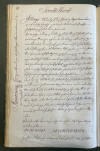 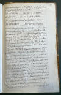

 S. 20-23
S. 20-23


Ergänzende Infos S.
31-35
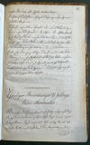 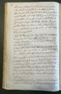 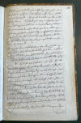 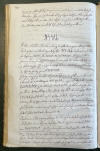 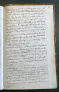
Dieses Werk wird heute in Kopenhagen, Nationalmuseum, Antikvarisk-Topografisk Arkiv, aufbewahrt. Dort durfte ich am Dienstag, 27.09.2022, zu Gast sein, die vier Bände in Händen halten und fotografieren.
In dem Werk von
Jacob Kornerup mit dem Titel "Kongehøiene
i Jellinge og deres Undersøgelse efter Kong Frederik VII's Befaling i 1861"
(mit einem Vorwort von
J.J.A. Worsaae) aus dem Jahr 1875 geht es um
die Ausgrabung der beiden
Jelling Hügel im Jahr 1861, die auf Befehl des dänischen
König Frederik VII. erfolgte. Darin sind zahlreiche Bildtafeln,
darunter auch die "Tavle 3" zum Runenstein von
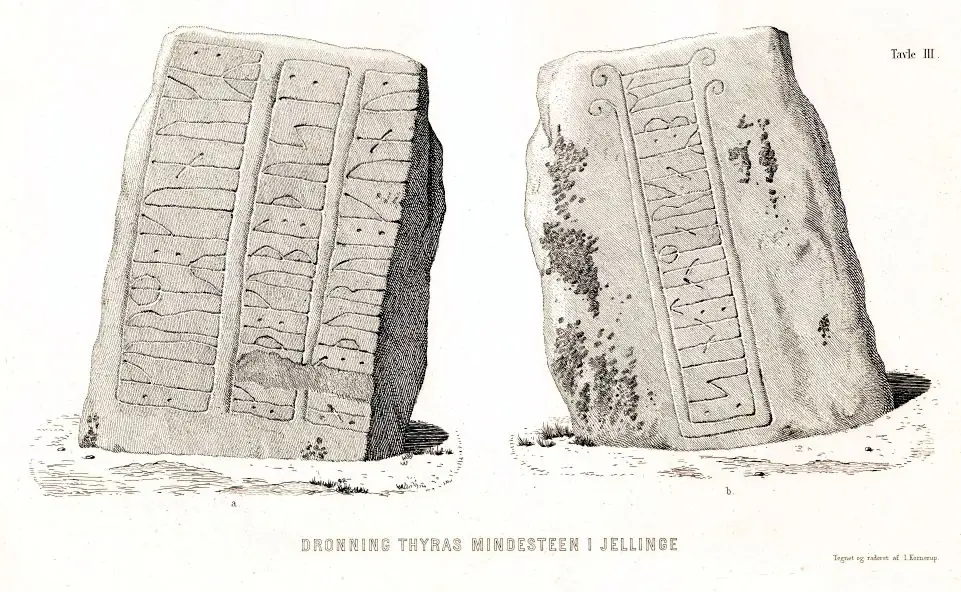
Quelle: Digitale Sammlung des Nationalmuseum Kopenhagen entnommen - Lizenz: CC-BY-SA. In dieser Sammlung finden sich unzählige Zeichnungen von Jacob Kornerup.
In den beiden großen dänischen Runenwerken wird dieser historische Runenstein selbstverständlich abgehandelt.
P. G. Thorsen (*07.08.1811 - 06.05.1883, Bibliothekar, Runenforscher und Historiker) hat in seinem Runenwerk "De danske runemindesmærker beskrevne og forklarede, anden Afdeling, Jyllands Runemindesmærker, Afbildninger og Text, I. Afbildninger, 1879" unter der Nr. 3 (Seite A)und unter der Nr. 4 (Seite B) diese beiden Zeichnungen von Magnus Petersen (*04.09.1827 - 01.02.1917, Archäologischer Zeichner und Restaurator) veröffentlicht. Die habe ich aus dem Exemplar, das sich in meiner Sammlung befindet, eingescannt. Der Mann wird von den Runologen zurecht als der beste Runensteinzeichner aller Zeiten tituliert! Diese geniale Wiedergabe der beiden Runensteinseiten finde ich ansprechender als alle Fotografien! Wenn man die B-Seite betrachtet, muss sich der Runenstein damals auch in einem weitaus besseren Zustand als heute befunden haben, da Magnus Petersen im oberen Bereich beidseits Ornamentik erkannt und gezeichnet hat.
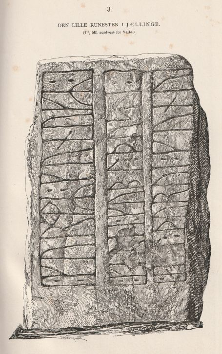
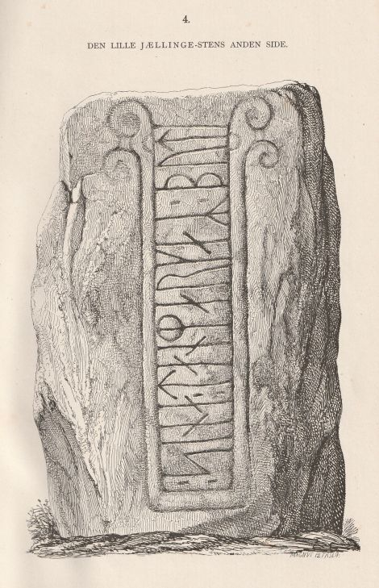
In seinem Textband aus dem Folgejahr 1880 hat er auf den S. 9-12 seine Ausführungen veröffentlicht.
Dessen Nachlass (Bezeichnet als: P. G. Thorsens optegnelser, tegninger m.m. vedrørende runer og runemindesmærker - überführt aus der Kopenhagener Universitätsbibliothek 1929 - Gemäß Ministerialschreiben vom 04.03.1929; früher benannt als Additamenta 612 kvart) - findet sich heutzutage in der Königlichen Bibliotek unter NKS 3296 kvart (in mehreren einzelnen Pappschachteln). In der Pappschachtel mit der Nummer 17 fand ich bei meinem dortigen Aufenthalt am Dienstag, 27.09.2022, insgesamt 13 Dokumente / Zeichnungen die sich mit Jelling befassen. Von Magnus Petersen habe ich diese beiden Zeichnungen des Runensteins - die sicherlich als Druckvorlage für die o.a. Seiten gedient haben - abfotografiert, die er auf den 01.09.1871 datiert hat.
Es fand sich außerdem noch diese Wiedergabe der beiden Runensteinseiten, die rechts oben den Vermerk "1848 P. G. Thorsen" trägt. Ob er die jetzt deswegen selbst gezeichnet hat, ist mir nicht bekannt.
Diese u.a. Zeichnungen fertigte auch Magnus Petersen (*04.09.1827 - 01.02.1917, Archäologischer Zeichner und Restaurator) an - 1877 - diesmal für Ludv. F. A. Wimmer (*07.02.1839 - 29.04.1920, Philologe und Runenforscher) und dessen großformatiges Runenwerk "De danske runemindesmærker undersøgte og tolkede af Ludv. F. A. Wimmer: Første Binds Anden Afdeling, De historiske Runemindesmærker, 1893-1895" - Nr. 1-2, S. 8 bis 17 - eigener Scan aus der in meinem Besitz befindlichen Ausgabe.
Ludv. F. A. Wimmer hielt sich am 25. bis 30. Juli 1878 und nochmals am 07./08. Juli 1882 in Jelling zu Forschungszwecken auf.
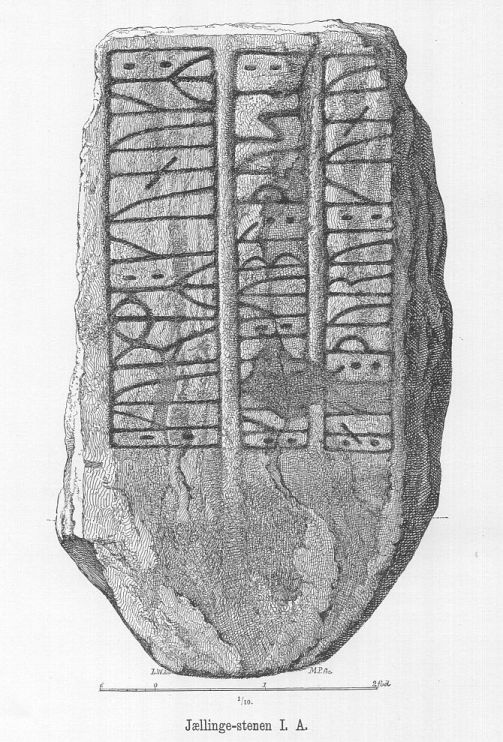
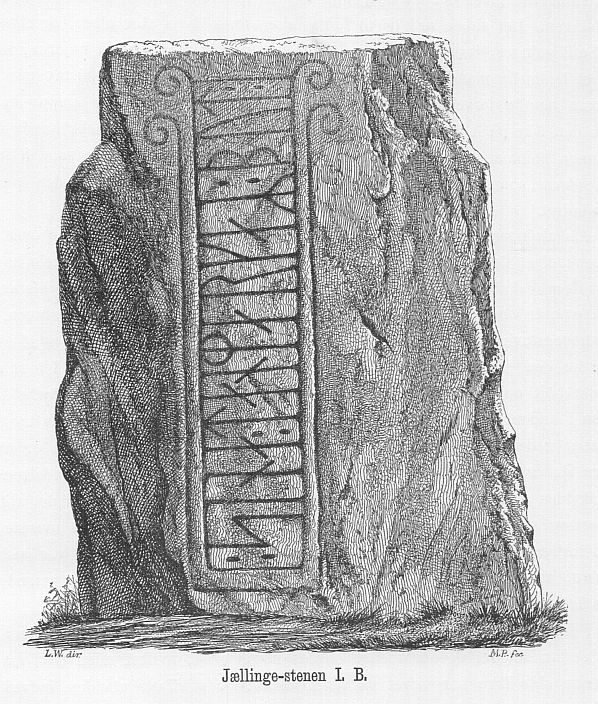
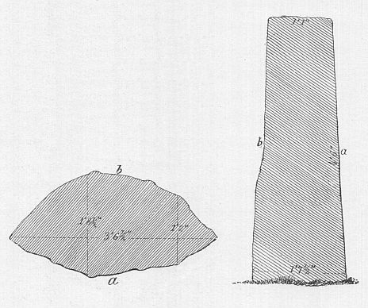
Ludv. F. A. Wimmer hat seine jahrelangen Aufzeichnungen der
"Kgl. Bibliotek"
in Kopenhagen überlassen. Ein Verzeichnis darüber wurde
1915 in Buchform herausgegeben -
In seinen Unterlagen in der Bibliothek befinden sich unter "III - Originaltegninger af de danske Runemindesmærker, udførte paa Undersøgelsesrejserne af Magn. Petersen og kontrollerede paa Stedet af Ludv. Wimmer, samt Prøvetryk af de paa Grundlag af de nævnte Tegninger, Aftryk o. s. v. til De danske Runemindesmærker" udførte Afbildninger med Wimmers Rettelser"


seine Aufzeichnungen zu den Runensteinen von Jelling unter der Nr. 1-2, woraus ich bei meinem Besuch am 27.09.2022 diese beiden Zeichnungen zum kleinen Runenstein von Magnus Petersen - die er auf den 29.07.1878 datiert hat fotografieren durfte.
Diese Aufnahmen stammen von Erik Moltke (*04.04.1901 - 19.10.1984, Runologe, Historiker), die er wohl am 19.08.1929 gefertigt hat.
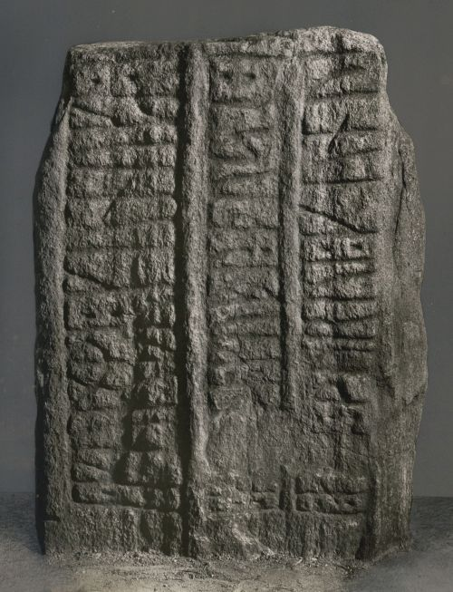
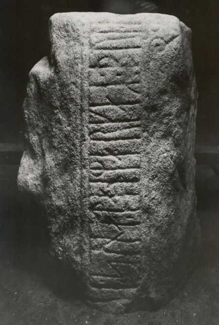
Quelle: Digitale Sammlung des Nationalmuseums Kopenhagen - Seite A - Seite B - Lizenz jeweils: CC-BY-SAIm Vorfeld zu dem 2016 erschienenen Buch von Lisbeth M. Imer (*1973, Runologin am Nationalmuseum Kopenhagen) "Danmarks Runesten - en fortælling" reiste sie mit dem Fotografen Roberto Fortuna zur Bestandsaufnahme durch die Lande. Dieser hat die Runensteine abends bei Dunkelheit mit Schräglicht aufgenommen - damals noch ohne den Schutzbau - und darüber wirklich herausragende Fotos erzielt. Diese Aufnahmen unten entstanden im Oktober 2010. Mit diesen und den Aufnahmen des großen Runensteins von Harald Blauzahn starteten die beiden ihre damalige Tour. Da ihnen bekannt war, dass diese beiden Runensteine durch eine Überdachung für die Zukunft vor Witterungs- und Umwelteinflüssen geschützt werden sollten, war ihr zügiges Handeln angesagt, da ansonsten keine unbeeinflussten Fotos mehr möglich gewesen wären. Die Einweihung der Schutzbauten war am Sonntag, 04.12.2011.

Quelle/Fotograf unbekannt - über Google Bildersuche nicht mehr auszumachen - Tipp: Artikel "Danmarks runesten i nyt lys" in Nationalmuseets Arbejdsmark 2013, S. 124-139
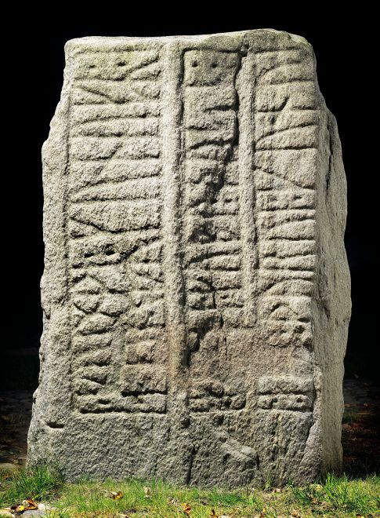
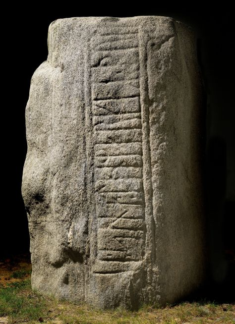
Quelle: Digitale Sammlung des Nationalmuseums Kopenhagen - Seite A - Seite B - Lizenz jeweils: CC-BY-SA
Hier kommt man zu einem 114-seitigen Bericht mit dem Titel "Beretning for tilsyn og undersøgelse i forbindelse med etablering af overdækningen af runestenene i Jelling i 2011". Übersetzung: "Bericht zur Überwachung und Untersuchung im Zusammenhang mit der Errichtung der Abdeckung der Runensteine in Jelling im Jahr 2011".
Darin finden sich auf der S. 97 in der pdf-Datei diese beiden Fotos zum Fundament für den Schutzbau. Fotograf dort nicht angegeben. Der Einbau des Sockelrahmens für den großen Stein erfolgte am 03.07.2011 vor den Sommerferien. Der Rahmen für den kleinen Runenstein kam nach den Ferien dazu.
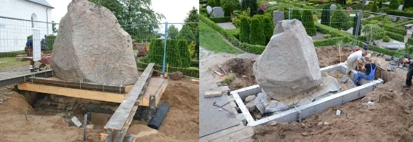
In der Abhandlung "Afskærmning af Jellingstenene" - Ausschnitt des Titelbildes siehe unten / abgerufen 19.11.2023 - vom 04.02.2010 wird über die offene Architektur Ausschreibung vom 26.08.2009 für den Schutzbau der beiden Runensteine und die dazu eingereichten 157 verschiedenen Vorschläge berichtet. Der "Forslag 86/21708" erhielt die meiste Zustimmung und das ausgelobte Preisgeld in Höhe von 250.000 DKK (ca. 33.500 ) ging darüber an die in Kopenhagen angesiedelten "NOBEL arkitekter" mit ihrer Projektgruppe.
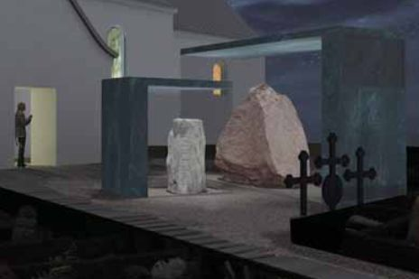
Bereits 1823 hatte der Pfarrer in Jelling, Chresten Sørensen, dem Bezirksgouverneur zusammen mit der u.a. Zeichnung vorgeschlagen, dass man ein dreieckiges, spitzes Ziegeldach erbaut, um die Runensteine gegen Regen und Schneeregen, zu schützen. An der Spitze des großen Steins war ein alter, großer Riss beobachtet worden. Da zu dieser Initiative keine weiteren Informationen vorliegen, wurde sie vermutlich nicht umgesetzt.
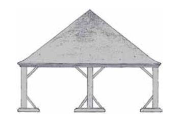
Quelle: Steen Hvass - Jelling Monumenterne deres historie og bevaring - 2011 - S. 16 - abgerufen 19.11.2023
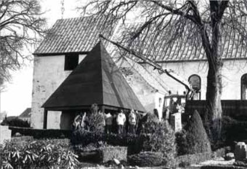
Quelle: Steen Hvass - Jelling Monumenterne deres historie og bevaring - 2011 - S. 17 - abgerufen 19.11.2023
In den folgenden Jahren gab es Grund für eine wachsende Besorgnis im Hinblick auf den Zustand beider Runensteine. Im Jahr 2006 wurde eine archäologische Untersuchung des kleinen Runensteins durchgeführt. Deren primärer Zweck bestand darin, Schäden unter der Erdoberfläche zu untersuchen, es wurde aber auch das Fundament des Steins untersucht.
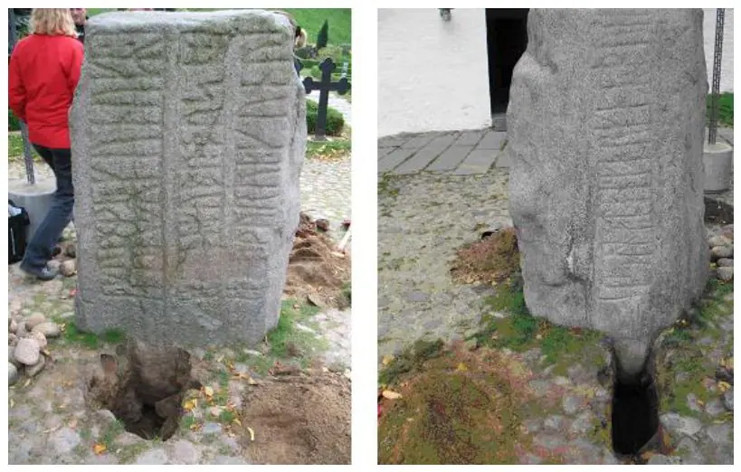
Bildquelle: "Runestenene i Jelling - Undersøgelse af bevaringstilstand - Rapport Marts 2008" - S. 29 - abgerufen 20.11.2023
Zu genauen Erfassung wurden beide Steine im Jahr 2007 einer damals völlig neuen Methode, einem 3D Lichtscan, unterzogen. Dabei wurden zahlreiche Absprengungen (im Vergleich zu einer exakten Kopie von 1984) und Hohlräume erkannt, die bei Eindringen von Wasser und hinzukommendem Frost enorme Schäden für die Zukunft befürchten ließen. Unten eine Darstellung der Steinseite A dazu: Grün = Risse (R 1 bis R 5) / Blau = Absprengungen (A 1 bis A 3) / Rot = Hohlraum
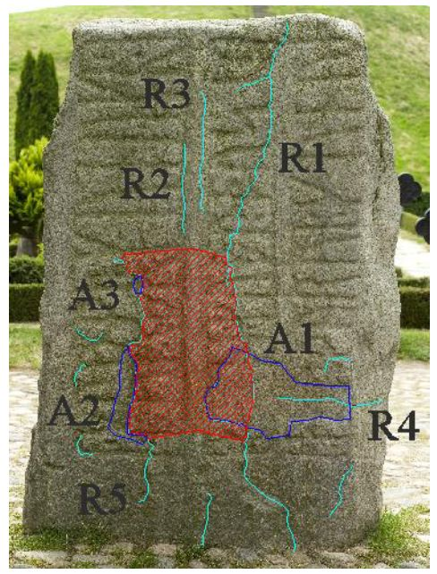
Bildquelle: "Runestenene i Jelling - Undersøgelse af bevaringstilstand - Rapport Marts 2008" - S. 36 - abgerufen 20.11.2023
Am 27. und 28.04.2009 wurde die rechts vom Kircheneingang und nur ca. 5 Meter von den beiden Runensteinen befindliche alte Linde gefällt. Der Baum und seine Blätter wurden als primäre Quelle der Verschlechterung des Erhaltungszustandes der Steine ausgemacht, da darüber zusätzliche Mengen Regens auf die Steine niedergehen. Durch die Baumfällaktion versprach man sich eine Reduzierung des Niederschlags auf die Runensteine um etwa 2/3.
Die große Wurzel der Linde wurde im Boden belassen, um die archäologischen Schichten nicht zu zerstören, der Baumstumpf aber bis kurz unter die Erdoberfläche abgefräst.
Nach Beratungen mit dem Weltkulturerbekomitee der UNESCO in Paris kam es dann im Hinblick auf eine optimale Sicherung in kontrollierter Klimaumgebung zu der o.a Ausschreibung für einen Ideenwettbewerb zu einem Schutzbau im Jahr 2009. Der Schutzbau konnte dann mit einer Spende der VELUX Stiftung und einer außerplanmäßigen Bewilligung des Kultusministeriums realisiert und am Sonntag, 04.12.2011, eingeweiht werden. Meines Erachtens ein wirklich gelungener, unaufdringlicher Schutzbau mit optimalem Schutzbedingungen und bestem Licht zur Abend-/Nachtzeit.
An der Stelle möchte ich auf diesen 59-seitigen Bericht zum Bewahrungszustand mit dem Titel "Runestenene i Jelling -Undersøgelse af bevaringstilstand - Rapport Marts 2008" sowie die dazugehörige 29-seitige Beilage "Runestenene i Jelling - Undersøgelse af bevaringstilstand - Bilag - Marts 2008" hinweisen, die sich ausführlich mit dem Zustand und den Schäden über die Jahrhunderte beschäftigen und zahlreiches Bildmaterial beinhalten.
In Varde stehen neben dem Varde Museum Kopien der beiden Jelling Runensteine die mit Farbe ausgemalt sind. Die Exemplare wurden vom Großhändler Cornelius Stau (*27.07.1845 - 18.12.1926 - link-LIVES - Melderegister - Bestattungsprotokoll) gestiftet, der am 11.05.1912 zusammen mit seiner Frau Elisabeth Juliette Christine Stau, geb. Madsen (*16.12.1854 -16.10.1915 - link-LIVES - Konfirmation - Melderegister - Bestattungsprotokoll) das Varde Museum gegründet / eröffnet hatte.

Bildquelle: arkiv.dk / Varde Lokalhistoriske Arkiv - Lizenz: CC BY-SA 4.0 - Fotografie um 1900 - Fotograf unbekannt
Da sie selbst nie Kinder hatten, gaben sie einen Teil ihres beträchtlichen Vermögens für das Varde Museum aus. Das Museumsgebäude wurde vom Schlossarchitekten Thorvald Jørgensen (*27.06.1867 - 15.05.1946)
 Bildquelle:
Wikipedia - Lizenz:
Public Domain
Bildquelle:
Wikipedia - Lizenz:
Public Domain
entworfen, der unter anderem war hinter den Zeichnungen für Schloss Christiansborg in Kopenhagen. Mit dem Bau des Museums beauftragten sie einen der geschicktesten Maurer der Stadt, Henrik Ferdinand Hansen (*06.08.1836 - 06.10.1922, später auch Bürgermeister von Varde).
 Bildquelle:
arkiv.dk - Lizenz:
Public Domain
Bildquelle:
arkiv.dk - Lizenz:
Public Domain
Cornelius Stau leitete selbst den Bau und die Einrichtung des Hauses, das 1914 fertiggestellt wurde. Er legte auch den Grundstein für die große Gemälde- und Kunstsammlung des Varde Museums viele der in der Sammlung des Museums enthaltenen Objekte stammten direkt aus den Wohnzimmern des Paares. Es waren nicht nur teure Antiquitäten, die Stau darin ausstellen wollte, sondern auch typische Dinge wie Jyde-Töpfe und Ethnographie aus entfernten Regionen wie Afrika und Grönland. Die Bürger Vardes sollten die Möglichkeit gegeben haben, sich im Museum niederzulassen und sich wohl zu fühlen, praktisch mit allem, von bildender Kunst über grönländische Schlittenhunde, Straußeneier aus Afrika, Bauernkultur und nicht zuletzt mit der Vorgeschichte Dänemarks. 1915 schenkte das Paar dem Museum ein Paar Kopien der Goldhörner von Gallehus.
Cornelius und
Elisabeth Stau lebten in
Kopenhagen,
stammten aber ursprünglich beide aus der
Varde-Gegend.
Nach dem Tod seiner Frau beschloss Cornelius Stau, dem Museum zwei
exakte Kopien der beiden
Jelling-Steine zu
schenken.
Seinem Wunsch, das Geschenk an Elisabeths Geburtstag am
16. Dezember zu enthüllen, wurde entsprochen und die
monumentalen Abgüsse von Hans Christian Berg direkt
vor dem Haupteingang des
Museums aufgestellt.
Später wurden sie an ihren heutigen Standort nordöstlich des Museums verlegt.
In den 1970er Jahrenn war der Runologe
Erik Moltke
für die Farbwahl des
großen Runensteins verantwortlich..
Diee
Runensteine wurden Ende der 1970er Jahre schon
einmal renoviert. Ende 2020 wurden sie von dem
Museumsangestellten Bent Ejner Nielsen noch neu angemalt, bevor er
nach 38 Jahren im Museum in Rente ging.


Diese Fotos habe ich im Rahmen meiner 2022er
Jütland Wikingertour
am Montag, 30.05.2022, aufgenommen.
Über diesen Link kann man die - in dänischer Sprache gehaltene und reich bebilderte - Abhandlung "Vardes Jellingsten nu igen i farver - Af Lene B. Frandsen", die sich im "opdatering - Årbog for Vardemuseerne & Ringkøbing-Skjern Museum, 2020, S. 148-157" befindet, abrufen - übersetzt: "Vardes Jellingsten jetzt wieder in Farbe - Von Lene B. Frandsen". Darin wird die Geschichte zu den beiden Runensteinkopien umfassen erzählt und zur neuen Farbgebung berichtet.
Im Sommer 1983 war ich erstmals in Dänemark
in einem 3-wöchigen Urlaub in einemm Ferienhaus
bei Købmand
Hansen
am
Henne
Strand. Dabei führte uns der Weg auch einmal zu diesen ca. 25
km entfernten Kopien der
Jelling
Runensteine. Damals habe ich noch ganz normale Fotos
gemacht, bevor ich dann aus Kostengründen auf Dia umstieg. Aber ich kann
mich nicht mehr erinnern, mit welchem Fotoapparat ich diese drei Bilder
(Scan vom 12.07.2023) gemacht habe - die Qualität war
garnicht mal so schlecht. Der Herr hinter der Ansicht mit der Christusseite
war mein damaliger Chef, der mit mir und einem weiteren Kollegen und unseren
Frauen den Urlaub verbrachte. Er hat uns sechs - einer saß dabei im
Kofferraum - mit seinemm
VW 412 Variant durchs Land gefahren - auch nach
Jelling-
und ihm habe ich darüber letztlich mein tolles Hobby zu verdanken - DANKE
Klaus!


Den Eintrag zu diesem Runenstein aus der dänischen Runen Datenbank im Internet kann man hier abrufen.
Die Informationen in "Fund og Fortidsminder" zu dem Runenstein finden sich hier. Darin ist inzwischen dieser Bericht mit dem Titel "Beretning for tilsyn og undersøgelse i forbindelse med etablering af overdækningen af runestenene i Jelling i 2011" aus dem Jahr 2016 eingebettet.
Infos zu dem Runenstein über das Forschungsprojekt "Runes" der Akademie der Wissenschaften zu Göttingen.
Auf der Webseite "http://www.biopix-foto.de/" findet sich Fotos von den zwei Seiten des Runensteins mit farbiger Ausschmückung und nachgezeichneten Runen, was die Erkennbar-/Lesbarkeit deutlich verbessert.
Auf den Webseiten des Dänischen Nationalmuseums - Danmarks Kirker - kann man eine in dänischer Sprache gehaltene 143-seitige, bebilderte Abhandlung als pdf-Datei zur Baugeschichte/Innenausstattung der Kirche von Jelling aus dem Jahr 2022 abrufen. Diese Abhandlung ist nicht nur quasi brandneu, sondern handelt neben der Kirche, ihrer Baugeschichte und Ausstattung auch den kompletten Jelling Komplex ab - Runensteine / Grabhügel / Schiffssetzung / Palisade / Kirche mit Wandgemälden / usw. - und alles mit tollen Fotos.
Literaturhinweise:
Susanne
Lykke Nielsen - Peder Hansen Resen - Atlas Danicus VI D Ribe Stift, S. 133-139,
Odense Universitetsforlag 1987
Poul Grinder-Hansen - Søren Abildgaard (1718-1791) Fortiden på tegnebrættet - 2010 - S. 533 - 538 (Nr. 599-605)
Leiv Olsen - Maal og Minne - 2013 - S. 1- 38 - Språkleg tolking av Danmarkar bót
Durch das Jelling Projekt gab es eine Literaturliste zu Jelling von 1591 bis zum 09.02.2013 die 603 Einträge umfasste (davon 124 mit Verlinkungen zur Online Verfügbarkeit als pdf-Dateien / plus eine Ergänzungsliste). Ich habe bei Anne Pedersen - die mir die Listen als pdf-Dateien auf Anfrage im Dezember 2021 zugesandt hat - angefragt, ob ich die hier veröffentlichen darf - die Antwort steht noch aus!